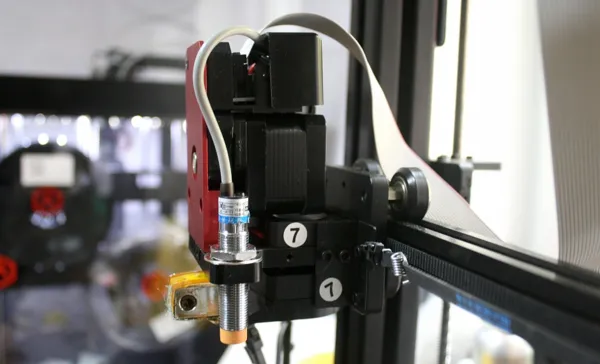

Wanhao Duplicator 9 MK1 फ़र्मवेयर
पहला Duplicator 9: नोज़ल के पास धातु का इंडक्टिव प्रोब, प्रिंट हेड तक ग्रे रिबन केबल, और बिना साइड पट्टियों वाला फ़्रेम।
ये बिल्ड इंडक्टिव प्रोब को सही दिशा में पढ़ते हैं (यह LOW पर ट्रिगर होता है) और Wanhao के आख़िरी MK1 फ़र्मवेयर V0.164(B) की सेटिंग्स लेते हैं, प्रोब ऑफ़सेट समेत (X 15, Y 0)। Y मोटर पीछे लगी है, जैसे Wanhao ने बनाई थी।

डाउनलोड
| साइज़ | बिल्ड वॉल्यूम | फ़र्मवेयर |
|---|---|---|
| D9/300 | 300 × 300 × 400 mm | D9_MK1_300.hex |
| D9/400 | 400 × 400 × 400 mm | D9_MK1_400.hex |
| D9/500 | 500 × 500 × 500 mm | D9_MK1_500.hex |
अपने साइज़ की फ़ाइल लें, फिर स्क्रीन को DGUS Reloaded से फ़्लैश करें।
Wanhao के दस्तावेज़
- D9 MK1 यूज़र मैनुअल (जून 2018, अंग्रेज़ी में): असेंबली, वायरिंग, मेनू, लेवलिंग, समस्या समाधान।
- D9 MK1 शुरुआती गाइड।
Wanhao के ओरिजिनल फ़र्मवेयर
मशीन को फ़ैक्टरी वाली हालत में वापस लाने के लिए। हर मदरबोर्ड फ़र्मवेयर सिर्फ़ उसी वर्ज़न के स्क्रीन फ़र्मवेयर के साथ काम करता है।
| वर्ज़न | साइज़ | मदरबोर्ड | स्क्रीन |
|---|---|---|---|
| V0.15 | D9/300 | D9-V0.15.hex | D9-LCD-firmware-V0.15.rar |
| V0.161 | D9/300 | D9-300-0.161.hex | DWIN_SET_V0.161.zip |
| V0.164(B) | D9/300 | D9_300_V0.164(B).hex | D9-LCD-firmware_v0.164(B).zip |
| V0.164(B) | D9/400 | D9_400_V0.164(B).hex | D9-LCD-firmware_v0.164(B).zip |
| V0.164(B) | D9/500 | D9_500_V0.164(B).hex | D9-LCD-firmware_v0.164(B).zip |
हर वर्ज़न की सेटिंग्स (steps/mm, स्पीड, PID, एक्सिस की दिशाएँ) Wanhao की बाइनरी फ़ाइलों से पढ़कर extract.md में दी गई हैं।